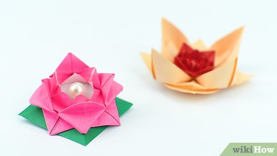

Origami or [oɾiꜜɡami], from ori meaning "folding", and kami meaning "paper" is the art of paper folding, which is often associated with Japanese culture.

Facts About Turtles
- Turtles spend most of their lives in water
- Turtles are reptiles most easily recognised for their hard shells that protect them from predators.
- Sea turtles are among the oldest and most primitive groups of reptiles remaining on Earth.
< img src = "elephant.jpg" width = 300 height = 300>
FACTS About elephant
- Three species of elephants are recognised; the African bush elephant (Loxodonta africana) and forest elephant (Loxodonta cyclotis) of sub-Saharan Afric and the Asian elephant (Elephas maximus) of South and Southeast Asia.
- elephants help protect forest health in central Africa by distributing the seeds of trees.
- Elephants are the largest animals on earth

Facts about Flowers
- Flowers did not always exist; they first appeared 140 million years ago
- Several centuries ago in Holland, tulips were more valuable than gold
- Some plants such as orchids do not need soil to grow-they get all of their nutrients from the air.